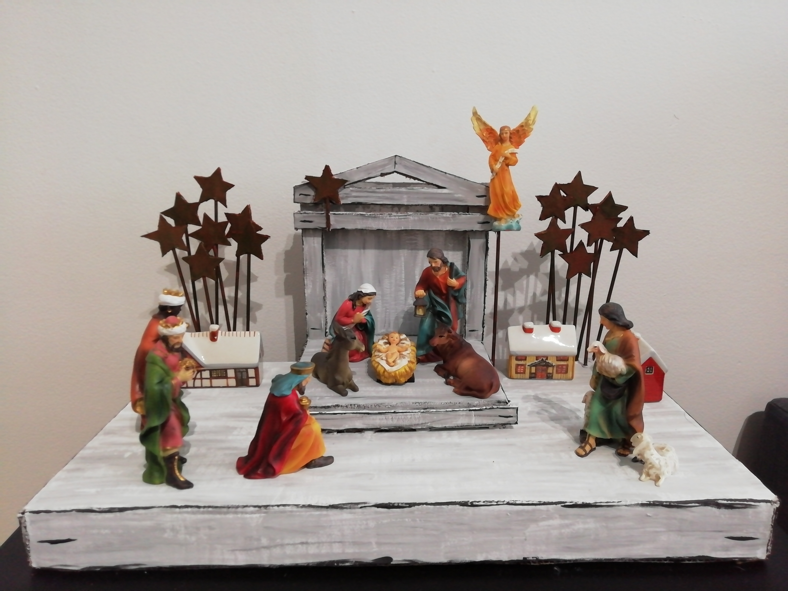

La polyvalence de cette technique

L'utilisation de ces peintures ne se limite pas aux œuvres sur toile. Cet exemple montre comment ces matériaux peuvent être utilisés pour créer une crèche de Noël. En peignant sur de la céramique et du carton, les textures et les finitions sont superbes. Recréé par Karen Rivera.
Conseil:
Les peintures acryliques sèchent très rapidement et durcissent si elles sont esposées à l'air pendant plus d'une minute. C'est pour quoi vous devez laver votre pinceau après chaque utilisation et le garder sec.